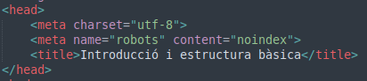

Introducció
HTML és un llenguatge de marques (no confondre amb un llenguatge de programació, explicarem el perque més endavant), creat per definir l'estructura d'una pàgina web.
En conjunt amb CSS (pel disseny) i JavaScript (pel funcionament), HTML defineix l'estructura de la pàgina web.
Avui día es molt emprat, de fet, aquesta mateixa pàgina està feta amb HTML!
(També hem de dir que, quina altra opció hi ha?)
Però abans de començar, hem de respondre un parell de dubtes:
Q&A
Q: Per qué HTML no és un llenguatge de programació?
A: Per diversos motius!
- El mateix nom ho diu (HyperText Marking Language, és un llenguatge de marques).
- No té elements com variables, funcions, control de fluxe..., només elements amb un tag i atributs diferents per descriure el que són.
Q: Puc fer una pàgina només amb HTML?
A: Pots, però no es veura molt atractiu (aquesta web és el millor exemple del que vull dir).
Q: I si vull emprar Python?
A: ...
Q: És el mateix dir Java que JavaScript?
A: No, Java és un llenguatge de programació general, JavaScript és era només per web.
Crec que tot ha quedat clar.
...
Passam a emprar HTML!
Estructura bàsica HTML, elements, etiquetes i atributs
Un element a HTML és quan defineixes un objecte a HTML. Per posar un exemple, aquest text que estàs llegint és un element a HTML.
Una etiqueta és el text amb el que defineixes el tipus d'un element. Al cas d'aquest text (i el d'adalt), és p
Un atribut és un valor adicional que pots incloure a un element HTML. D'aquest mostraré exemples més endavant.
Ara, per l'estructura d'un document HTML:
Primer, al teu arxiu HTML (arxiu que el seu nom acaba amb .html), inclou aquesta línia:
<!DOCTYPE html>
Seguit d'un element amb etiqueta d'html:
<html> </html>
TOT el que vulguis incluir a la teva pàgina web (en quant a estructura), ha d'estar entre el <html> i el </html>.
(Com és el cas del "i el" a la frase de dalt.)
Adicionalment, a dins de l'HTML, pots incloure un atribut
(si, aquest és un dels exemples d'atributs que abans he dit que mencionaria més endavant)
amb nom "lang", que defineix l'idioma i el dialecte.
Per exemple, si vull fer un document HTML en català estàndart, hauría de fer el següent:
<html lang="ca">
O si vull fer-ho en castellà d'Espanya, hauría de ser:
<html lang="es-ES">
Si no vull que sigui d'Espanya, sinò d'Argentina, ha de ser:
<html lang="es-AR">
Deixaré aquí una públicació a GitHub que en menciona uns quants més:
Un document HTML es divideix en dues parts:
-
El head, a on s'inclouran detalls del navegador.
Al cas d'aquesta pàgina, el head és:
 -
El body, a on s'inclourà el que es mostra a la pàgina com a tal.
<body></body>
<head></head>
El head, com hem explicat abans, s'empra per definir característiques pel navegador.
Emprarem com a referéncia l'imatge d'abans:
A dins del head (el head d'aquesta imatge), trobam 3 elements:
-
<meta charset="utf-8">
Defineix quins caràcters emprar a la web, en aquest cas, UTF-8. -
<meta name="robots" content="noindex">
Defineix que la pàgina no ha de ser indexada per motors de cerca com Google o Microsoft Edge (que no ha d'apareixer si la cerques).
Al meu cas, es per que aquesta web és una tasca (bon dia profe). -
<title>Introducció i estructura bàsica</title>
Defineix el títol de la pàgina, i si no em creus, mira a dalt.
Ara, a l'hora de fer tu la teva pàgina web, principalment hauràs de fer servir el primer i el darrer.
<body></body>
D'aquest en tenim TANT PER EXPLICAR que emprarém les altres seccions d'aquesta pàgina. Però resumidament, és a on definiràs el que surtirà a la teva pàgina.
Document HTML bàsic final
<!DOCTYPE html>
<html lang="ca-ES">
<head>
<meta charset="utf-8">
<title>Títol aquí</title>
</head>
<body>
</body>
</html>